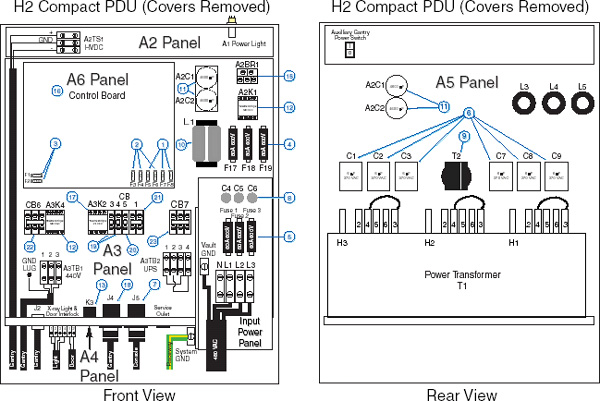
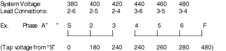
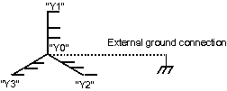
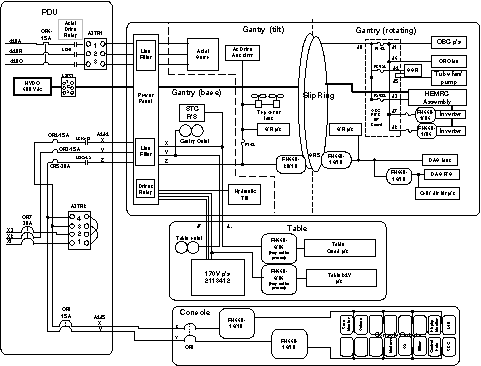
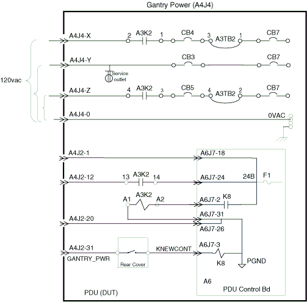
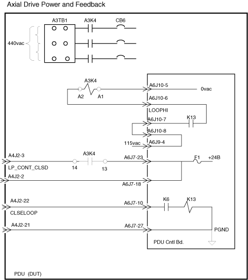
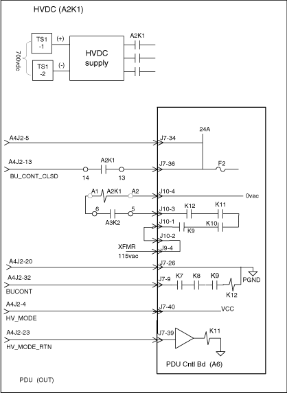
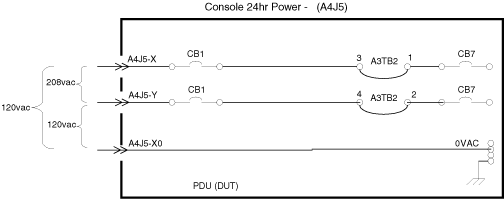
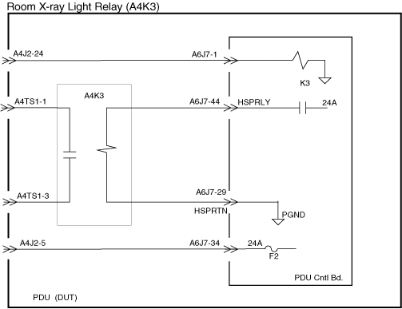
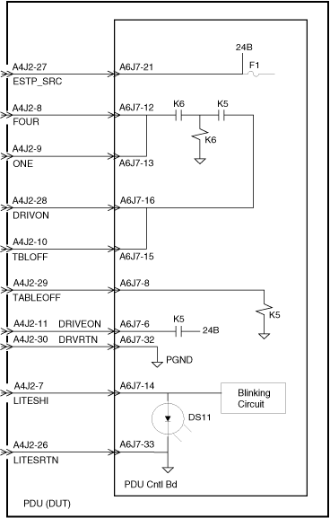

Operating Documentation
Direction 5114045-800, Rev# 10
LightSpeed 4.X Service Information (Advanced)
Operating Documentation |
| Last Revised on: | Sept 1, 2004 |
The enclosure has a front, back and top access covers. The top cover is hinged at the rear and is provided with a lock to prevent unauthorized access. The top cover is provided with supports, such that it remains in the open position safely without service personnel assistance. Two captive fasteners at the top and two guide pins at the bottom hold the front cover in place. The front cover weighs less than 25 lbs.
A single full-width Lexan safety shield is provided under the front cover. It extends 1/2” below the top front edge of the assembly to the bottom of all HVDC Supply components, including the PDU Control Board. There’s a cutout in the lower left corner of the shield to provide access to the low voltage portion of the PDU Control Board.
The rear cover is held in place by twelve 10-32 machine screws. To maintain a good high frequency ground between internal subassemblies, all internal metal surfaces are solidly grounded to each other.
The enclosure is painted Mist Gray (GEMS Gray #1).
The main input transformer is located in the rear accessible chamber near the bottom of the cabinet, allowing enough room for cable access beneath. For ease of installation and serviceability the remaining components for the HVDC Supply and AC Power Distribution are located on the vertical dividing panel behind the front cover. Refer to Table 1 below, for general component information. Items numbers in table appear in circles of Illustration 1.
Table 1: Major Components
| ITEM | NAME / DESCRIPTION |
|---|---|
| 1 | 8A, 250V, Slow-Blow Fuse |
| 2 | 2A, 250V, Slow-Blow Fuse |
| 3 | 1.5A, 250V, Fuse |
| 4 | 80A, 600V, Semiconductor Fuse |
| 5 | 60A, 600V, Dual Element Fuse |
| 6 | 6uF, 370Vac Capacitor |
| 7 | 20A, 3P, 4W Receptacle NEMA Type L14-20R-Flange Mount |
| 8 | 0.025uF, 480V, 100A, Feed-through Capacitor |
| 9 | Transformer 2113764-26 |
| 10 | 2133533-2 1.2 mH, 140 A, DC Inductor |
| 11 | 4600 μF, 450 V, Capacitor |
| 12 | 32/50A Contactor, 120Vac, 60Hz Coil |
| 13 | Warning light control Relay |
| 14 | Front Cover |
| 15 | 110A, 1600V Diode Bridge |
| 16 | PDU Control Board |
| 17 | 18/35A Contactor, 24Vdc Coil |
| 18 | 30A, 4P, 5W Receptacle NEMA Type L21-30R-Flange Mount |
| 19 | 15A, 1P Circuit Breaker |
| 20 | 30A, 1P Circuit Breaker |
| 21 | 15A, 2P Circuit Breaker; 10A, 3P Circuit Breaker |
| 22 | 15A, 3P Circuit Breaker |
| 23 | 30A, 3P Circuit Breaker |
Illustration 1: Component/Physical Layout (Model 2269902)

| NOTE: | For a full size version of this illustration, click on the pdf icon below. |
Media File 1: Full Size Illustration: Component/Physical Layout (Model 2269902)

The PDU has a rating plate permanently attached to the rear edge of the top cover. It contains the following information:
Manufactured for GE Medical Systems
Milwaukee, Wisconsin
by (Vendor Name)
Power Distribution Unit
Model No. 2269902 / (Vendor model #)
Serial No. ____________
Input Voltage: 3 ~ 380 // 480 V
Line Frequency: 50 / 60 Hz
Input Power:
Momentary 90 kVA @ 0.85 PF
Continuous 20 kVA
Weight 640 lbs. (291 kg.)
Date Code: ___________ Made in USA
(appropriate test house markings, e.g., UL, ETL, CSA or eq.)
For ease of service identification, an auxiliary rating plate is also located inside the unit, under the top cover. It includes the GEMS model number and unit serial number.
The PDU does not require any specific periodic maintenance. An annual inspection for lint and dust is suggested, along with a check of electrical terminals for proper tightness.
All replacement parts required for servicing the PDU are directly interchangeable without need of any readjustment. Circuit boards and subassemblies are given unique part numbers and revisions are completely backward compatible.
The PDU is designed so no special service tools are required. The assembly can be serviced with standard off-the-shelf service tools.
The input power terminals accommodate #4 to #1/0 (fine strand) wire sizes. Ferrules are provided for the maximum wire capacity allowed. Input line fuses rated 60A per phase are used to protect the system. Dual element, time delay motor starting fuses are used.
The primary input power terminations & fuses are mounted in a dedicated enclosure within the PDU. Bulkhead mounted, low inductance, feed through filter capacitors are connected in series with each of the three primary lines on the load side of the primary fuses. The capacitance of each device is 0.025μF to ground.
Low inductance, AC filter capacitors rated for mains connection are installed in a floating wye configuration on the three primary lines, on the load side of the fuses. Each capacitor is rated at 6.0 μF.
The main input transformer is an indoor style, multiple winding, 3-phase isolation transformer. It has an open frame, varnish impregnated core and coil construction. It is suitable for continuous duty without requiring forced air-cooling. The insulation system used is UL, CSA, & IEC recognized for 180C (Class H) or better, and each transformer is labeled accordingly.
The magnetic circuit is designed for nominal 50/60 Hz operation (47 to 63 Hz limits). It accommodates a daily variation of ±10% input voltage, (i.e., 110% input voltage doesn’t cause excessive exciting current and core losses). Under worst case conditions, the transformer’s peak inrush current is less than 1000A when properly connected and energized at 380 V, 50 Hz.
All power for the CT System passes through the primary winding of the input transformer. It is protected by the primary input fuses described above.
The primary winding is designed for delta connection. Voltage selection taps are provided on each phase to accommodate 20 volt steps over the input voltage range of 380 to 480 V. All leads are brought out to a panel for external voltage selection. See Illustration 2.
Illustration 2: Compact PDU Primary taps

At shipment, the primary taps are set to the 480 volt connection.
Secondary #1 is a 208Y/120V wye connected power winding. The phase leads are labeled X1, X2, and X3. The neutral, labeled X0, is isolated and brought out for external connection to ground. See Illustration 3.
Illustration 3: Secondary “X” Winding Configuration

The full winding feeds general-purpose power to the CT system. The winding is protected at 30A per phase with a three-pole, 30A circuit breaker labeled CB7.
Secondary #2 is a 494Y/285V wye connected power winding. The phase leads are labeled Y1, Y2, and Y3. The neutral, labeled Y0, is isolated and brought out for external connection to ground. see Illustration 4.
This winding contains three (3) normally closed thermal cutout switches, one securely embedded in each phase coil. These switches are set to open at a nominal temperature of 180C. When actuated, they generate an over-temperature fault on the PDU Control Board and disable the HVDC output.
Taps are provided on each phase (labeled Y4, Y5, and Y6) to provide a 440Y/254V, wye connected source. These taps are used to power the gantry axial drive.
In addition, a second set of taps is provided on each phase (labeled Y7, Y8, and Y9) to provide a 52Y/30V, wye connected source. These taps are used for intermittent service diagnostic tests only, and their load is mutually exclusive of all other loads on this winding.
Illustration 4: Secondary “Y” Winding

The #2 secondary winding provides x-ray & drives power to the system. The full winding powers the HVDC supply. This is a six-pulse unregulated DC supply, which feeds the X-Ray source. The output of the full winding is protected by 80A semiconductor fuses, F17, F18 and F19. Winding protection is accomplished electronically by the load control circuitry for both short-circuit and thermal overloads.
The 440Y/254V taps feed an external Variable Speed AC Motor Drive. These taps are protected at 15A per phase with a three-pole, 15A circuit breaker, labeled CB6.
As mentioned above, the second set of taps providing a 52Y/30V, wye connected source are used for intermittent service diagnostics only. These taps provide an alternate source for the unregulated DC supply normally fed by the full winding. They are protected electronically by the DC supply circuitry, and no fusing is provided.
Full width electrostatic shields are provided between the primary and secondary windings. Each shield is grounded to the core and frame. (The lead position and attachment method minimizes shield impedance to high frequency noise signals.)
A general overview of the AC Power Distribution of the CT system is shown in Illustration 5.
Illustration 5: AC Power Distribution (Model 2269902)

| NOTE: | For a full size version of this illustration, click on the pdf icon below. |
Media File 2: Full Size Illustration: AC Power Distribution (Model 2269902)

The PDU Isolation Transformer, Secondary #1, supplies low voltage AC subsystem power. It is protected at 30A per phase with a three-pole, 30A circuit breaker. The full winding protection breaker is labeled CB7.
Phases A & C on the load side of CB7 is wired to terminals 1 & 2 of a four-position terminal block, labeled A3TB2. Jumpers connect terminals 1 to 3 and 2 to 4, with the PDU loads connected to the outputs of terminals 3 & 4. These jumpers are removed whenever an optional UPS is used with the system.
AC power is distributed to the CT System via four (4) separate branch circuits. These branches are protected by individual circuit breakers ( see Table 2) .
Table 2: Circuit Breaker (Model 2269902)
| BREAKER | RATING | POLES | PHASE | LOAD DESCRIPTION |
|---|---|---|---|---|
| CB1 | 15A | 2 | A, C | Console via J5-X, J5-Y |
| CB3 | 15A | 1 | B | Table* & Gantry Service Outlets via J4-Y; also PDU Service Outlet |
| CB4 | 15A | 1 | A | Table 24Hr power & Gantry Stationary Loads via A3K2-L1 & J4-X |
| CB5 | 30A | 1 | C | Gantry Rotating Loads via A3K2-L2 and J4-Z |
| *Table service outlet is limited to 10 amperes. | ||||
The output connectors for AC power distribution to external subsystems are as follows:
Table 3: AC Output Connectors
| SUBSYSTEM | PDU CONNECTOR TYPE |
|---|---|
| CT Gantry | 30A, 4P, 5W Receptacle, NEMA Type L21-30R-Flange Mount. Labeled “J4 GANTRY” |
| Console | 20A, 3P, 4W Receptacle, NEMA Type L14-20R-Flange Mount. Labeled “J5 Console” |
The HVDC power supply is an unregulated, six pulse DC power source that feeds the high voltage subsystem used to generate x-rays. The output voltage of this supply ranges between a maximum of 750VDC (No Load) and a minimum of 500VDC (Full Load). The full load current capacity of this supply is 100ADC.
The input to the HVDC Supply is the 3-phase, 494V output from the transformer secondary #2 as previously described. Each phase of this winding is protected by an 80 AMP semiconductor fuse.
The load side of the fuses is connected to a three-pole contactor. The operating voltage of the coil is115 VAC 50/60Hz. The contactor has an auxiliary switch with a single pole, normally open contact used for sensing the status of the device. The load side of the contactor is connected to the input of a 3 phase, full wave bridge rectifier. The bridge rectifier is mounted to an aluminum heat sink, approximately 2” X 6” X 1/4”. Thermal compound is used between the heat sink and rectifier and between the heat sink and chassis mounting surface.
The DC output of the bridge rectifier is filtered with an L-C network composed of a 1.2mH series inductor, and two 4600uf, 450 volt electrolytic capacitors. The capacitors are connected in series and across the output leads of the inductor.
Output leads from the capacitors are terminated in a three position terminal strip. This terminal strip is labeled “A2TS1”. It is mounted horizontally on the vertical surface above the PDU Control Board. The terminal strip positions are labeled: Top “TS1-1 (+)”, Center “GND” and Bottom “TS1-2 (-)”. A Lexan cover is provided over the terminal strip to prevent service personnel from accidentally contacting live parts.
The internal wiring is connected to the right side of the terminal strip, leaving the left side open for field installation of the system cable. A cable clamp is provided at the transformer bulkhead, which is used for strain relief and termination of the shield of the field installed cable.
The 440V taps of secondary #2 are used to power an external variable speed AC motor drive used for axial rotation of the gantry. The drive uses a conventional three-phase full wave bridge rectifier input circuit. This produces strong 5th & 7th harmonic currents typical of 6-pulse rectification. The maximum load under gantry acceleration conditions is 15A.
The circuit is protected at 15A per phase with a three-pole, 15A circuit breaker, labeled CB6.
The CB6 circuit breaker feeds a three-pole contactor, labeled A3K4. The contactor’s 115 VAC coil is controlled externally by the CT system. Auxiliary contacts on the contactor provide status feedback information to the system.
Output leads from the A3K4 contactor terminate in a three position terminal strip. This terminal strip is labeled “A3TB1”. It is mounted on the vertical surface below the contactor. A Lexan cover is provided over the terminal strip to prevent service personnel accidentally contacting live parts.
The internal wiring is connected to the top of the terminal strip, leaving the bottom open for field installation of the system cable. A cable clamp is provided at the transformer bulkhead, which is used for strain relief and termination of the shield of the field installed cable.
A 1/4-20 ground stud with a nut and captive lockwasher are provided in the vertical panel left of the A3TB1 terminal strip.
The PDU provides all power to the CT system. A PDU Control Board is located within the unit and provides for proper sequencing of the sub-system power, servo system, and x-ray backup contactor when commanded by the system. To facilitate control, the PDU Control Board contains a low voltage limited energy (LVLE) 24Vdc power supply, which provides the necessary communication power to the system.
The output voltage of this supply is 26 VDC, +/-5 volts for all conditions of line and load.
Table 4 is a list of PDU Control Signals, that are accessible by means of a 37 position, female subminiature D type receptacle connector located in the output bulkhead at the bottom of the enclosure. This connector is labeled A4J2.
Table 4: Subsystem Signal List - A4J2
| PIN # | SIGNAL NAME | FUNCTIONAL DESCRIPTION |
|---|---|---|
| 1 | PDU_24B | +24Vdc output to Gantry E-Stop Control circuits. |
| 2 | PDU_24B | +24Vdc output to Gantry E-Stop Control circuits. |
| 3 | LP_CONT_CLSD | Switched +24Vdc output indicating contactor A3K4 is closed. |
| 4 | HV_MODE | Current limited +15Vdc output for HV Mode circuit in gantry. |
| 5 | PDU_24A | +24Vdc output to Gantry X-Ray Control circuits. |
| 6 | PDU_24A | +24Vdc output to Gantry X-Ray Control circuits. |
| 7 | LITESHI | +24Vdc signal to indicate the
status of the x-ray and drive power enable. Three states are possible:
|
| 8 | FOUR | Switched 24Vdc input from E-Stop push button control loop. |
| 9 | ONE | Switched +24Vdc output to E-Stop/Gantry reset push buttons. |
| 10 | TBLOFF | Switched +24Vdc output to table tape switch circuit. |
| 11 | DRIVEON | Switched +24Vdc output to gantry to enable elevation, tilt & cradle drives contactors. |
| 12 | 120_RDBK | Switched +24Vdc output indicating contactor A3K2 is closed. |
| 13 | BU_CONT_CLSD | Switched +24Vdc output indicating contactor A2K1 is closed. |
| 14 | MAN_HVDC | Switched +24Vdc output to gantry to command HVDC on. |
| 15 | MAINS_UV+ | Current limited +15Vdc output for Mains Under-voltage circuit in Gantry. |
| 16 | N/C | no connection |
| 17 | N/C | no connection |
| 18 | DRRDBKRN | Contact closure w.r.t. pin 37 indicating the drives relays are commanded “on”. |
| 19 | GND | Redundant chassis ground connection for cable shield. |
| 20 | PDU_PGND | Signal Ground return for 24Vdc circuits to/from gantry. |
| 21 | PDU_PGND | Signal Ground return for 24Vdc circuits to/from gantry. |
| 22 | CLOSELOOP | +24VDC input signal to close the Axial Drive contactor, A3K4. |
| 23 | HV_MODE_RTN | Switched +15Vdc HV_MODE signal from gantry. |
| 24 | XRAYLITE | +24VDC input signal to close the Hospital Room Light relay, A4K3. |
| 25 | EXP_INTLK | Exposure Interlock loop to PGND via Room Door Interlock at A4TS1-5 & 6. |
| 26 | LITESRTN | Signal Ground return for LITESHI circuit from gantry. |
| 27 | ESTP_SRC | +24Vdc output to Gantry E-Stop Control circuits. |
| 28 | DRIVON | Switched +24Vdc input from E-Stop/Gantry reset push buttons. |
| 29 | TABLEOFF | Switched +24Vdc input from table tape switch circuit. |
| 30 | DRVRTN | Signal Ground return for DRIVEON circuit from gantry |
| 31 | GANTRY_PWR | +24VDC input signal to close the Gantry Power Contactor, A3K2. |
| 32 | BUCONT | +24VDC input signal to close the Backup Contactor, A2K1. |
| 33 | N/C | no connection |
| 34 | MAINS_UV- | Switched low-side output for mains under voltage circuit. |
| 35 | N/C | no connection |
| 36 | N/C | no connection |
| 37 | DRRDBK | Contact closure w.r.t. pin 18 indicating the drives relays are commanded “on”. |
A six position terminal block, labeled A4TS1, is provided in the output bulkhead at the bottom of the enclosure. This terminal block has compression type terminals approved for use with bare or stranded wire and suitable for a wire size range of 22 to 10AWG.
Terminals 1 through 4 are used for connection of an external hospital room warning light as described below. Terminals 5 & 6 are used for connection of a room door interlock switch in the system x-ray enable circuit.
EXTERNAL X-RAY WARNING LIGHT - Positions 1 and 3 of the terminal block are connected across a normally open set of relay contacts rated at 250 VAC, 20 Amps. The relay is labeled A4K3.
Positions 2 and 4 of the terminal block are jumpered together with a series RC network having a resistance of 100 ohms, a capacitance of 0.5 uF and a voltage rating of 250 VAC.
The terminal block shall be labeled as follows:
Positions 1 and 2, “INPUT POWER”.
Positions 3 and 4, “LOAD”.
In addition, the following label appears near the terminal block:
ROOM DOOR INTERLOCK - Positions 5 & 6 of the terminal block provide for a Room Door interlock in the X-Ray Exposure control of the system. Terminal 5 is connected to the EXP_INTLK signal at A4J2-25. Terminal 6 is connected to PGND at A6J7-30 on the PDU Control Board.
These terminals are labeled “DOOR INTERLOCK SW”. Each unit is shipped with a jumper installed between pins 5 & 6 (by default).
| Potential for electrical shock. | |
| Turning OFF power to the PDU may not remove power to this terminal block. | |
| Verify removal of power with an appropriate measuring device before servicing. Input voltage not to exceed 30VAC. |
An auxiliary gantry power switch is mounted on the right rear surface of the enclosure. The switch is connected to the 24Vdc control circuit of contactor A3K2, in series with the “GANTRY_PWR” signal at A4J2-31. “UP” is “ON”, and is the default position.
When the 120VAC ON signal is received at the GANTRY_PWR connection, given the auxiliary power switch is closed, relay coil A6K8 is energized and its contacts close. This relay completes the circuit to the coil of A3K2, which in turn completes the 120VAC circuit to the gantry and table. Stationary CT gantry and table power is protected by CB4 and gantry rotating power by CB5.
See Illustration 6.
Table and gantry service outlet power is unaffected by 120VAC ON signal and can only be disabled by its associated circuit breaker CB3. Note that CB3, CB4 and CB5 are slaves to master circuit breaker CB7. Table service outlet is limited to 10 amperes.
Illustration 6: Gantry Power Control (Model 2269902)

Axial Drive Power is controlled by relay A3K4 and is protected by circuit breaker CB6. When the PDU control board senses an e-stop condition, coil A6K6 (e-stop) locks out operation of relay coil A6K13, which prevents activation of the relay A3K4. See Illustration 7.
Illustration 7: Axial Drive Power Control

When the BUCONT signal is received and the connection between HV_MODE and HV_MODE_RTN is made, the HVDC supply will produce output. When the coils K12 and K11 are energized, the coil A2K1 is energized. The contacts on A2K1 close and supply power to the HVDC supply. This operation can be inhibited by the PDU control board “E-stop” circuit, through relay contacts A3K2. See Illustration 8.
Illustration 8: HVDC Supply Control

120VAC power for the console is derived from two legs of 208VAC. Console power is protected by circuit breaker CB1 (CB1 is a slave to CB7). See Illustration 9.
Illustration 9: Console Power Control (Model 2269902)

See Illustration 10 for the room light control circuitry.
Illustration 10: Room Light Control

NORMAL STATE
With the E-stops and tape sensors in normal state, a connection is made between ESTP_SRC and FOUR, and between TBLOFF and TABLEOFF respectively. In this condition, the reset and drives enable lamps are illuminated steadily, the reset light being controlled by the connection between LITESHI and LITESRTN, the drives light by DRIVEON and DRVRTN connections.
TAPE SENSOR
When a table tape sensor is activated, the connection between TBLOFF and TABLEOFF is opened. This situation opens the circuit between DRIVEON and DRVRTN, and turns the drive enable lamp off. The blinking circuit now pulses the reset lamp slowly to indicate the condition.
E-STOP
When an E-stop switch is activated, the connection between ESTP_SRC and FOUR is opened. This situation opens the circuit between DRIVEON and DRVRTN, and turns off the drive enable lamp. The blinking circuit now pulses the reset lamp fast, to indicate the e-stop condition, through the connection LITESHI and LITESRTN.
For the E-stop/drives control diagram, see Illustration 11.
Illustration 11: E-Stop/Drives Control (Model 2269902)
